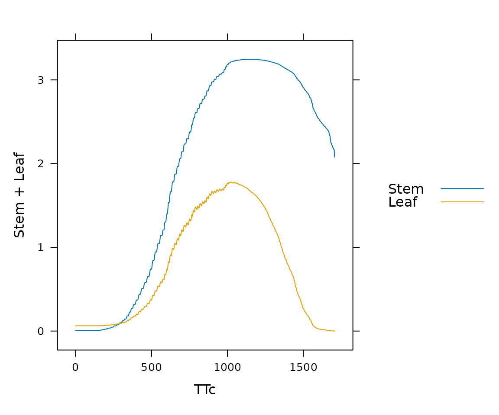

Overview
BioCro is a model that predicts plant growth over time given crop-specific parameters and environmental data as input.
It uses models of key physiological and biophysical processes underlying plant growth, and has previously been used for predicting biomass yield and leaf area index of switchgrass and miscanthus. In 2022, BioCro was reorganized to take a truly modular approach to modeling and a new soybean model was developed.
An example
The run_biocro() function accepts initial values,
parameters, climate variables, and sets of modules to run. It returns
the results in a data frame.
library(BioCro)
library(lattice)
result <- with(soybean, {run_biocro(
initial_values,
parameters,
soybean_weather$'2002',
direct_modules,
differential_modules,
ode_solver
)})
xyplot(Stem + Leaf ~ TTc, data = result, type='l', auto = TRUE)
There are parameters and modules for soybean (Glycine max), miscanthus (Miscanthus x giganteus), and willow (Saliceae salix).
Getting Started
The best place to get started with BioCro is the public BioCro Documentation web site, which includes the following:
Installation instructions
A “Practical Guide to BioCro” and other articles in the “Articles” dropdown menu
Documentation of the C++ code, including notes on the biological models used in BioCro, in the “C++ Library” dropdown menu
Documentation for BioCro developers and maintainers in the “Developer’s Manual” dropdown menu
There is also a separate page that documents all of the quantities used by the Standard BioCro Module Library.
License
The BioCro R package is licensed under the MIT license,
while the BioCro C++ framework is licensed under version 3 or greater of
the GNU Lesser General Public License (LGPL). This scheme allows people
to freely develop models for any use (public or private) under the MIT
license, but any changes to the framework that assembles and solves
models must make source code changes available to all users under the
LGPL. See LICENSE.note for more details.